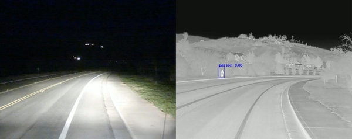

Avec l'apparition d'une technologie pouvait analyser la chaleur, son utilisation dans le domaine du travail semble tout à fait logique. Cela reste cependant un des domaines dans lequel l'infrarouge est le moins utilisé (en tout cas par apport aux autres domaines qui vont être cité), en effet, peu de compagnie de travail on l'utilité et les ressources financières d'acquérir ce genre d'outils. Un des seules grandes exceptions se trouve dans le domaine automobile, les caméras infrarouges sont extrêmement utiles et complémentaires aux véhicules d'aujourd'hui.
Ici on peut voir un électricien recherchant une fuite thermique dans un système avec un appareil infrarouge. Même si cela se rapproche du domaine industriel, l'utilisation de cette appareil reste un outil professionnel avant tout.
Je vous conseil de vérifier si votre voiture est équipée de capteur infrarouge, car pourrait vous sauvez la vie.Comme il a été dit plus haut, la plupart des nouveaux modeles sont équipés de ce genre de technologie, que se soit sous forme de caméra de recul, d'ajout au phare afin de mieux analyser la route, voir même près du moteur pour s'assurer de la température de l'engin. C'est sous cette forme que cette technologie est probablement la plus répandue au sein de la population.

Dans le noir, même avec des phares, il est tout de même difficile de faire attention à tout les dangers présent, la caméra infrarouge équipée sur cette voiture permet localiser les sources de chaleurs peut importe l'heure de la journée.
Si cela n'est pas encore clair pour vous voici une petite vidéo qui va vous présenter les caméras thermiques de véhicules :
Maritime
On rentre ici dans l'un des domaines d'applications les plus importants en technologie thermique mais avant de rentrer dans le vif du sujet laissez-moi vous poser quelques questions. Savez-vous combien de personne meurt noyé chaques jours? Non? Un petit effort.. Bon très bien, en France entre 3 et 4 personnes meurent en pleine mer, on ne parle pas simplement de visite à la plage, bien que ces cas de décès existe ce qui nous intéresse plus sont ceux en plein milieu de l'océan
. Imaginez-vous sur votre yatch privé en pleine nuit profitant de votre soirée de rêve quand tout à coup celui-ci se met à couler. Pensez-vous réellement qu'à une autre époque on aurait pu vous sauvez? La lumière n'étant pas assez pour éclairer la mer en tant de nuit, seul ce genre de sciences peut vous venir en aide.
Je vous offre la possibilité ici de télécharger un pdf vous expliquant clairement l'importance de l'infrarouge dans les opérations maritimes. Allez-y jetez un oeil ça vaut le coup.
Militaire
Ce n'est pas un secret, on a tous joué à un Call of Duty dans notre vie, les armes sont équipées de toutes sortes de systèmes infrarouges, celle-ci peuvent être utilisée à des fins différents. Que se soit pour localiser des civiles pris en otages à travers certains murs (mais pas tous rappelez vous de la définition donnée par Wikipédia ici) ou bien pour tout simplement mettre des personnes potentiellement dangeureuses hors d'état de nuir.
Je ne suis pas ici pour faire l'avocat du diable en vous disant que les armes sont bien ou mal ici je vous parle juste de fait.
Si vous êtes une âme sensibles je vous déconseil de regarder cette vidéo étant donné qu'elle montre l'utilisation militarisé de la technologie thermique :
Etant donné que je voudrais finir la présentation sur quelque chose de plus joyeux, voici une autre vidéo vous montrant toute l'importance qu'à l'infrarouge dans notre vie :